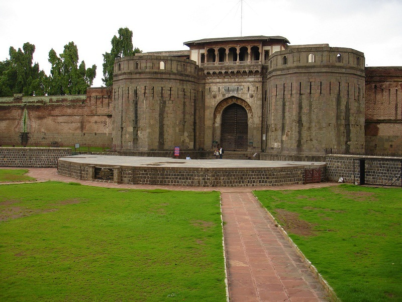
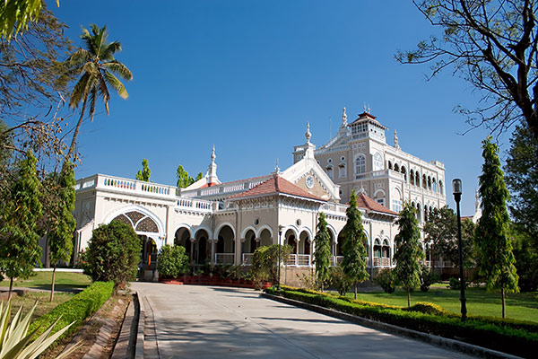
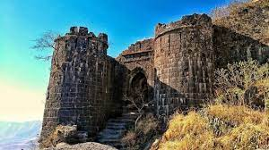
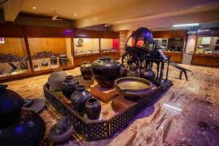
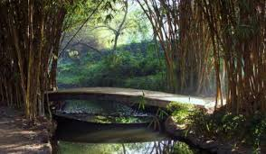
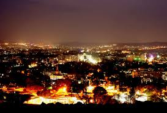

Attractions in Pune
Home
|| Know Pune ||
|| Attractions ||
|| Food ||
|| Contact Us ||
Attractions in Pune
Popular attractions in Pune include:
Shaniwar Wada

Aga Khan Palace

Sinhagad Fort

Raja Dinkar Kelkar Museum

Osho Garden

Parvati
